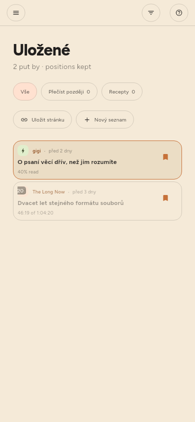

← Hledání · Obsah · Správa zdrojů →
Uchovávání
Uložit ve čtečce, nebo s v seznamu. Uložené články se nikdy nemažou, když se uvolňuje místo.
Seznamy (jen Premium)
Uložené je jeden seznam a můžete si vytvořit libovolně mnoho dalších — podle tématu, podle toho, co s články chcete dělat, jakkoli třídíte. Jsou v polici vlevo, pod Seznamy, a vedle názvu každého je, kolik obsahuje.

| Chcete | Uděláte |
|---|---|
| Vytvořit seznam | + u nadpisu Seznamy, nebo Nový seznam v nabídce ukládání |
| Něco do něj dát | Uložit zařadí do seznamu, který je v polici vyplněný |
| Zvolit jiný seznam | ▾ vedle Uložit, pravé kliknutí nebo podržení |
| Zase to odebrat | Znovu Uložit, v seznamu, kde je článek zařazen |
| Přejmenovat nebo odstranit seznam | Jeho ozubené kolo v polici, stejně jako u kanálu |
Uložit ukládá do seznamu, který jste zvolili naposledy. Výběr seznamu z nabídky článek zařadí a zároveň z toho seznamu udělá ten, do kterého od té doby ukládá obyčejné uložení — police ukazuje který, tím, že vyplní jeho záložku. Dokud nezvolíte jinak, je to Uložené, což uložení vždy znamenalo.
Článek může být ve více seznamech najednou a odebrání z jednoho ostatní nezmění. Uložené samotné nelze přejmenovat ani odstranit: obyčejné uložení musí mít kam jít a všechna zařízení se shodují právě na něm.
Odstranění seznamu ponechá jeho články, pokud je ještě drží kanál nebo jiný seznam — stejné pravidlo jako při odstranění kanálu. Odstranění zdroje uložené články nechá být a před odstraněním zdroje si zapíše, odkud pocházejí.
Seznamy se přenášejí mezi vašimi zařízeními, i s články v nich.